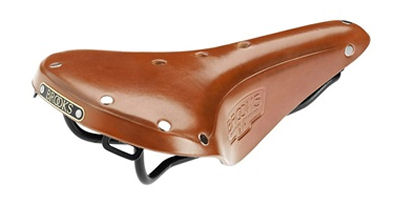

A Comfortable Bicycle Saddle
 Sheldon "Comfort" Brown
Sheldon "Comfort" Brown
A Comfortable Saddle
Every bicyclist wants a comfortable saddle. What is not so obvious is what constitutes a comfortable saddle.
Every spring, bike shops sell scads of saddles to cyclists who come in because their old saddle has become uncomfortable since they stopped cycling in the fall. They went out for a ride or two, and found it much less comfortable than they remembered from the previous year. They've heard about the latest buzzword in saddle gimmicks, and they want one of those!
They buy the new saddle, put it on the bike, go for a few more rides, and find they're much more comfortable. They tell all their friends about their wonderful new saddle, and how they need one too...
But was it really the new, high-tech saddle...or was it just that the rider had become unaccustomed to cycling over the winter layoff? In many cases, working your way up over the course of a few short rides of gradually increasing length is all that is necessary, if you have a decent-quality saddle, properly adjusted. If you have previously been comfortable on your present saddle, don't be in a hurry to change.
You'll notice that I do call them "saddles," not "seats." There is a reason for this. A seat is something you sit on, and is designed to bear essentially your entire weight. Recumbent bicycles have seats, but conventional upright bicycles have saddles. A saddle is intended to carrysome, but not all of your weight. The rest of your weight is mainly carried by your legs, and some by your hands and arms.
A cyclist who is out of cycling shape from being off a bicycle for a few months or more will start out strong, but the legs will tire rapidly. When the legs tire, the rider sits harder on the saddle, and that's when the trouble starts. Many saddle complaints are actually traceable to fatigue caused by starting out the season with a longer ride than you are ready for.
If it has been several months or more since you rode a bicycle regularly, you can expect to be sore if you ride any serious distance.
If you are coming off of a layoff of months or years, start with very short rides, maybe a mile or two, no more. Only gradually should you increase your ride distance. This may seem frustrating, but it does take a while to re-accustom your derrière to cycling. Anybody in decent shape can hop onto a bike and ride 15-20 miles, but you'll be a wreck afterwards if you haven't accustomed your body to cycling first.
This is not to say that there are not real differences in saddles, or that you should ride just anything. In fact, original-equipment saddles that come with bikes are often greatly inferior to better aftermarket saddles.
Contents
Basic make
Hard or Soft?
When a cyclist finds a saddle uncomfortable, the first impulse is often to look for a soft one. This is often a mistake. Just as the softest mattress is not necessarily the most comfortable to sleep on, the softest saddle is not the most comfortable to cycle on.
The "Two-Bump Problem"
Imagine sitting down on a coffee table. Your weight is concentrated on the two bumps of your "sit bones", also known as the "ischial tuberosities." These are the parts of your body designed to bear your seated weight. Most cases of saddle-related discomfort arise because the load is carried on the soft tissues between the sit bones.
Imagine placing a soft pillow on top of the coffee table. Now, as you sit down on it, the sit bones compress the pillow, which yields until the sit bones are almost on the table surface again. The difference is that now, you have pressure in between your sit bones from the middle part of the pillow.
In the same way, a saddle with excessively soft, thick padding can make you less comfortable by increasing the pressure between your sit bones.
Many cyclists are unaware of this, and many saddles are made to appeal to the purchaser who chooses a saddle on the basis of how easily a thumb can sink into the squishy top. This type of saddle is only comfortable for very short rides, (though an inexperienced cyclist will often find it more comfortable than a better saddle, as long as rides don't exceed a mile or two.)
Saddles with excessive padding are also a common cause of painful chafing of the inner thigh, as rides become longer.
Wide or Narrow?
The width of a saddle is quite crucial to the rider's comfort, and should be related to the space between the rider's sit bones. If the saddle is too narrow, the sit bones will hang over the sides, and the soft tissues will bear the load. If the saddle is too wide, it is likely to cause chafing of the inner thigh, especially in hot weather.
Many of the symptoms of mismatched saddle width are related to improper adjustment, so you should not necessarily discard your saddle as a bad fit if you haven't first experimented with its position.
[A note from John Allen -- A saddle's seeming too narrow is especially likely if the handlebars are too far forward, or the saddle is too far back, so you aren't sitting all the way back on it.
Also -- conventional wisdom is that women's sit bones are farther apart, so men should ride narrower saddles than women. This is generally true, but there is great individual variation and overlap.
You may know from my other writings that, like Sheldon, I favor leather saddles. And as I am male, narrow leather saddles should work for me, right? Wrong. My friend Bruce Ingle had a very fine, pre-softened Brooks Swift saddle with titanium rails on sale at a flea market a few years ago, at a bargain price. I was looking it over when Bruce warned me that he was selling it because it was too narrow for him. I placed the saddle on the edge of the flea-market table, resting on its rails, with its nose facing outwards. I sat on the saddle just like on the bicycle. Indeed, this saddle was too narrow, and Bruce spared me from wasting my money on it. Selling me the saddle would have brought him money, but friendship is priceless...]
Materials?
There are two fundamental types of saddle construction in current use: padded plastic or stretched leather.
Gel
A common buzzword in saddle construction is "gel", which is often touted as a cure-all. The material known as "gel" is a particular type of closed-cell foam, in which the air bubbles are at higher than normal pressure. The fact that a given saddle says "GEL" in big letters has no correlation with how comfortable it is...it's basically hype.
Padded Plastic Saddles
The typical modern saddle consists of four parts, the frame, the base, the padding and the cover:
- The metal frame, usually made of a steel or titanium rod, shaped as the letter "V" with the point forward.
- The plastic base of the saddle attaches to the frame at three points. The base may be made of hard or flexible plastic. Better bases are designed to flex under the rider's weight, and often are thinner under the sit bones to make them more shock-absorbent. The base must fit the particular rider's anatomy, and there is a considerable variation among individuals. This means that a saddle that is comfortable for one rider may be a torture for another.
- The padding is usually made of closed-cell foam, sometimes of the "gel" variety. If it is too soft or too thick, it can cause problems, either by exerting pressure on the soft tissues, or by causing chafing.
- The cover, which should be smooth but not too slippery, yielding, but not too fragile, and, if possible, should "breathe" a bit may be:
- Leather, which is used on the better saddles, and has all of the desired qualities;
- Lycra®, which is breathable, but sometimes too slippery, and is rather fragile. The better Lycra®-covered saddles often have plastic reinforcements at the points most exposed to damage (the 3 corners.)
- Vinyl, or vinyl-covered cloth, usually textured to approximate the appearance and consistency of leather. Vinyl is smooth, tends to be slippery, and to breathe poorly. It is more durable than Lycra ®, and cheaper than leather -- but unlike leather, it is not porous.
Tensioned Leather Saddles
Until the mid 1970s, most good-quality bicycles came with tensioned leather saddles. These have a frame basically similar to that of the padded plastic saddle, but with a curved metal bridge connecting the two rear points of the "V". A thick piece of leather is riveted to this bridge, and to an adjustable fitting at the nose of the saddle. The leather is suspended sort of like a hammock.
A properly-shaped leather saddle is an excellent choice for the high-mileage rider who doesn't mind its being a bit heavier than a plastic saddle.
Leather saddles provide "give" by stretching and flexing, without the need for foam padding. Heat and perspiration can "breathe" through the porous leather, greatly improving comfort in hot weather.
Leather saddles also "break in" to fit the particular shape of the rider, in much the same way as a baseball glove does.
They do require more care than plastic saddles. For more on this topic, see my article on Leather Saddles.
Pads
There are many aftermarket pads/covers available to put on top of your saddle. Most of these are not worthwhile. If your saddle is uncomfortable, it is very unlikely that any possible add-on device will make it comfortable. If the saddle is the wrong shape to fit your body, no accessory can correct this problem. Bite the bullet, and buy a new saddle instead.
Adjustment:
Saddle position may be adjusted in three different ways, all of which are important:
Height
The most basic saddle adjustment is the height. Most bicyclists have their saddles too low, so that their knees are excessively bent as they pedal. This makes cycling much more tiring for a given speed, and is likely to cause harm to the knees.
A common reason for keeping the saddle set too low is that most bicyclists have never learned the proper technique for mounting and dismounting, so they find it convenient to be able to put a foot -- or both feet -- down to steady the bicycle while they are stopped. With older bicycles, it was sometimes possible to put a toe down at a stop with the saddle properly adjusted, especially for riders with large feet. Due to the higher bottom brackets common on newer bicycles, especially mountain bikes, it is no longer possible to do this. If you ride a mountain bike, and are able to balance it while stopped and seated, it is a sure sign that your saddle is too low. This is also true of most hybrids.
Stopping and Restarting a Bicycle from John Allen on Vimeo.
Having the saddle too low makes it harder to carry much of your weight on your legs, so you will sit with more weight on the saddle. This, in itself, is likely to increase saddle discomfort.
How High?
There are lots of formulas for saddle height, most based on multiplying leg length by some fudge factor. The numerical exercise to 3 decimal places gives the illusion of scientific rigor, but, in my opinion, these systems are oversimplifications of a problem which involves not only leg length, but foot length, what part of the foot fits on the pedal, shoe-sole thickness, type of pedal system and pedaling style.
You cannot judge the height of the saddle with any accuracy by just sitting on it, or riding around the block. As you get close to the correct position, the clues get more and more subtle.
Most people start with the saddle too low. This is a habit left over from childhood, because growing children almost always have their saddles too low for efficient pedaling. First they have it low on a tricycle, then for security while they are learning to balance, then, even once they have mastered balancing, the habit sticks, and their growth rate tends to keep them ahead of their saddle adjustment.
If you always ride with your saddle too low, you get used to it, and don't realize that there is a problem...but there is. Riding with the saddle too low is like walking with your knees bent (as Groucho Marx often did for comedic effect.) If you walked that way all the time, you'd also get used to that, but you'd think that half a mile was a long walk. The way the human leg is made, it is strongest when it is nearly straight.
I like to think that William Blake summed it up nicely 200 years ago when he said:
until you know what is too much."
I suggest gradually raising your saddle, perhaps half an inch (1 cm) at a time. Each time you raise it, ride the bike. If it doesn't feel noticeably worse to ride, ride it for at least a couple of miles/km.
If it had been too low before, your bike will feel lighter and faster with the new riding position. If raising the saddle improved things, raise it again, and ride some more. Keep doing this until the saddle is finally too high, then lower it just a bit.
When the saddle is too high, you'll have to rock your hips to pedal, and you'll probably feel as if you need to stretch your legs to reach the bottom part of the pedal. Another indication that the saddle may be too high is if you find yourself moving forward so that you are sitting on the narrow front part of the saddle. (Although this symptom can also result from having the saddle nosed down, or having an excessive reach to the handlebars.) [Or from increasing fitness, so you are pedaling harder. In this case,you might need to move the saddle slightly forward. -- John Allen]
It also makes a bit of difference what sort of pedals/shoes you use. If you ride with ordinary shoes, virtually all of your pedaling power is generated by the downstroke, so a good leg extension is essential to let you apply maximum power in this direction. If you use clipless pedals and cleated cycling shoes, however, you can also generate a fair amount of your power by pulling the pedal backward near the bottom of the stroke. This action also uses the large muscles in the back of the leg, and can be quite efficient. If you make use of this pedaling style, you'll want a slightly lower saddle position than for direct "piston-style" pedaling with street shoes. A slightly lower saddle position is also conducive to pedaling at a rapid cadence.
Nuts & Bolts

The saddle is mounted on a seatpost , which telescopes into the seat tube of the bicycle frame. The seat tube usually has a gap, which is held together by the seatpost binder bolt . The binder bolt may require a fixed wrench , typically 13 mm or 14 mm; or, it may require an Allen wrench as shown, usually a 5 mm , sometimes a 6 mm; or it may be a quick-release , requiring no tools at all.
To adjust the saddle height, you need to loosen the binder bolt and raise or lower the seatpost in the seat tube. It may be necessary to twist it a bit to get it to move. If it is hard to move, you may need to remove it and grease the inside of the seat tube [but not with a carbon-fiber seatpost or frame: you might use dry graphite powder lubricant instead -- the kind that is squirted into the keyhole to lubricate a lock. With a carbon-fiber seatpost and/or frame, it is advisable to use a torque wrench when tightening the seatpost bolt-- John Allen]. (If a seatpost is really stuck, see my article on Stuck Seatposts .)
There is usually a "minimum insertion" mark about 2 inches (5 cm) from the bottom of the seatpost, to remind you to leave enough post inside the seat tube for security. If in doubt, pull it all the way out and check the length. If you can't get it up high enough without going past the minimum-insertion mark, you should buy a new, longer seatpost. (You'll need to get a seatpost of the same diameter...bring the old one into the shop for reference.)
If the binder bolt was hard to turn, take it apart and put some oil or grease on the threads, then re-assemble it...this will let you get it tighter, with less risk of stripping the threads.
Angle
The angle of the saddle should be pretty close to horizontal. Some men prefer the front to be slightly higher than the rear; some women prefer the front slightly lower than the rear, but extreme angles should be avoided.
If the saddle is nosed up too far, it is likely to increase pressure on the soft tissues, and cause all sorts of problems.
If the saddle is tilted down in front, the rider will tend to slide forward onto the narrower part of the saddle. Women who are riding on saddles that were designed for men frequently tilt their saddles down. This will relieve some of the discomfort from the saddle itself, but creates new problems: The tendency to slide forward can only be counteracted by pressure on the hands. Thus, poorly-angled saddles often are the cause of wrist, shoulder and neck problems, due to carrying too much of the rider's weight on the hands.
The angle and the front-back position are both adjusted by the clamp on the seatpost .
Front-back position
Saddles are also adjustable back and forth. Ideally, this adjustment should be made to set the saddle at the correct distance behind the bottom bracket , so that you are pedaling at an efficient angle. The conventional wisdom is that, when the pedal cranks are horizontal, your kneecap should be directly above the pedal spindle. Front-back position also will vary somewhat depending on your fitness and pedaling style. See Keith Bontrager's article on this topic .
It is generally considered a Bad Idea to tinker with saddle position to adjust the reach to the handlebars; it is better to adjust this by replacing the handlebar stem with one with a different reach , or by buying a bicycle with a different-length top tube .
The angle and the front-back position are both adjusted by the clamp on the seatpost .


Seatposts
The saddle is attached to the seatpost by a clamp, which falls into one of two types:
Separate Clamps
 Older (and cheap newer) bicycles use seatposts that are basically a length of steel or aluminum pipe which narrows down at the top as needed to fit a separate saddle clamp (usually 7/8"/22.2 mm). A bolt runs crosswise through the clamp, and holds a set of special-shaped washers to the rails of the saddle's undercarriage. When one of the nuts on this bolt is loosened, it becomes possible to slide the rails
back and forth
and to adjust the
tilt
of the saddle.
Older (and cheap newer) bicycles use seatposts that are basically a length of steel or aluminum pipe which narrows down at the top as needed to fit a separate saddle clamp (usually 7/8"/22.2 mm). A bolt runs crosswise through the clamp, and holds a set of special-shaped washers to the rails of the saddle's undercarriage. When one of the nuts on this bolt is loosened, it becomes possible to slide the rails
back and forth
and to adjust the
tilt
of the saddle.
Some of these special washers have serrations which help maintain the angle of the saddle. It is very important to tighten the nuts securely so the saddle will not act as a rocking chair. If it does slip, the serrations will get worn down, and you will be unable to secure the saddle without installing a new saddle clamp.
Some wider saddles are "four-bar" saddles. Their frames have two sets of rods, upper and lower. These saddles must be used with separate clamps and pipe-type seatposts, or a seat sandwich adapter.
Brooks B66 saddle with four-bar undercarriage and saddle clamp

Built-in Clamps
 Most newer bicycles use seatposts with an integral saddle clamp, which secures the saddle by one or two bolts.
Most newer bicycles use seatposts with an integral saddle clamp, which secures the saddle by one or two bolts.
-
Single-bolt seatposts, also called Laprade seatposts, use a single vertical bolt to hold the saddle rails sandwiched between a pair of grooved blocks. The lower block will have a curved, serrated surface that mates with a matching curved, serrated surface that is part of the seatpost. When the bolt is loose, the blocks may be tilted to adjust the saddle tilt , and the rails can slide back and forth to adjust the front/rear position of the saddle.
- Two-bolt seatposts use a pair of bolts to hold the blocks of the saddle clamp. Loosening either one of these allows you to slide the saddle back and forth . Loosening one and tightening the other allows you to adjust the tilt . (If one of the bolts is larger than the other, the larger one should be loosened before making any adjustment to the smaller one.) This type of mechanism allows a finer level of control of the saddle tilt, because it doesn't rely on the meshing of teeth in serrated parts, so this type of seatpost is also known as a " microadjust " seatpost. With some of these seatposts, the bolt heads are at the top, and getting a wrench in to turn the bolts can be a chore unless the saddle has a shallow profile. (Single-bolt seatposts are also sometimes called "microadjust," with questionable accuracy.)
Brooks Swallow saddle on two-bolt seatpost.
This saddle's shallow profile makes adjustment of the seatpost easy!

- A few seatposts have a pivot to adjust the tilt, with a clamp bolt in a slot to hold the adjustment.

Suspension
Much saddle-related discomfort is caused by impacts of the bicycle's wheels with bumps and irregularities in the road. This can be greatly reduced by the use of some form of suspension .
Posting
The most basic suspension device is the rider's legs! Experienced cyclists learn to raise themselves slightly off the saddle when riding over major bumps, keeping the knees bent, so that the leg muscles act as springs.
On longer rides, when your legs are tired, this becomes harder to do. Sometimes, too, a bump will take you by surprise. For these situations, a mechanical form of suspension can be helpful.
Springs
Until the 1970s bike boom , virtually all bicycle saddles had springs. The only cyclists who rode unsprung saddles were hard-core, high-intensity riders. These cyclists carried such a large proportion of their body weight on their legs that they didn't need springs in their saddles, and they were weight-conscious enough to begrudge the weight of the springs. Sporty cyclists also preferred unsprung saddles because they made it easier to pedal rapid cadences without bouncing.
When the bike boom struck, and everybody in America bought a racing-style drop-bar ten speed, the unsprung saddle was part of the deal. Unfortunately, neither the unsprung saddle, the drop handlebars, nor the narrow tires suited the needs of the more casual, "recreational" cyclist or utility cyclist.
The mountain bike revolution was a movement away from the drop bar and the narrow tire, but the unsprung saddle remained. The mountain bike came with big, fat, squishy tires, which were able to provide enough shock-absorbency to make the bike reasonably comfortable to ride. Unfortunately, those same tires also made the bike slow and hard to pedal.
Despite fashion, I believe that saddles with built-in springs make a great deal of sense for most cyclists, who favor a fairly upright riding position which puts more of the rider's weight on the saddle.
Brooks Flyer sprung saddle

[By now (2015), suspension forks are almost universal on mountain bikes, and suspension frames, on high-end ones. Mountain-bike suspension, though, mostly softens the impact of hard landings and big bumps, rather than increasing comfort in normal riding. Moderately wide, easy-rolling tires, foam handlebar grips -- and a sprung saddle or suspension seatpost -- are effective in reducing fatigue from ordinary riding-surface roughness. This is even more so on small-wheel bikes. I count myself an avid cyclist, but I have Brooks Flyer sprung saddles on my Bike Friday and my Raleigh Twenty, both of which have 20-inch wheels. -- John Allen]
Telescoping/linkage Seatposts
If a simple sprung saddle doesn't offer enough suspension travel for you, you can buy a seatpost with a built-in suspension mechanism. There are two families of suspension seatposts, telescoping and linkage types:
-
 Telescoping seatposts
have an inner and outer tube, which slide inside of one another. They normally have either a coil spring or an
elastomer
as the active suspension element.
Telescoping seatposts
have an inner and outer tube, which slide inside of one another. They normally have either a coil spring or an
elastomer
as the active suspension element.
This type of seatpost is unobtrusive and takes up little space. Unfortunately, the sliding contact between the inner and outer tube can sometimes result in excessive friction and binding. This type of post is also prone to developing rotational play as it wears.
The telescoping mechanism works best when the load is applied right along the axis of the post, so most posts of this type have saddle clamps with little or no setback . Unfortunately, this causes biomechanical problems for many cyclists, since most frames are designed for use with a seatpost that has a reasonable amount of setback.
-
 Linkage seatposts
use a
parallelogram linkage
with an elastomer inside of it. This type has the advantage of avoiding sliding friction, so it is less prone to sticking and developing rotational play than the telescoping type. Linkage seatposts can have any desired amount of setback. The setback actually changes as the suspension moves.
Linkage seatposts
use a
parallelogram linkage
with an elastomer inside of it. This type has the advantage of avoiding sliding friction, so it is less prone to sticking and developing rotational play than the telescoping type. Linkage seatposts can have any desired amount of setback. The setback actually changes as the suspension moves.
Linkage seatposts tend to be heavier than telescoping models, and, since the suspension mechanism is all above the seat tube, they can be used only by cyclists who can fit their bikes with a considerable clearance between the saddle and the top of the seat tube.
Suspension seatposts usually have a preload adjustment, which is normally set for the weight of the rider, so that the suspension won't move from just the rider's weight, but will only travel when the bike hits a bump.
[The preload adjustment prevents the seatpost from springing up too high and making it difficult to mount and dismount. Suspension seatposts are weaker against twisting than rigid seatposts. Be extra-sure to grease a suspension seatpost; also loosen it and rotate it at least once per year, because twisting it in an attempt to unstick it will very likely break it. -- John Allen]
Beams
Some bicycles have no seat tube at all, and attach the saddle to a cantilevered beam, which points back from a point just behind the head tube. This beam may be made flexible, to provide a very good suspension system with no moving parts. Although this system goes back at least to the 1940s, when there was an Italian bike with a spring-steel beam, it didn't really catch on until the 1990's when the Softride (originally called "Allsop") beam was introduced. This composite beam is sort of like a mini-diving board, and provides excellent rider comfort.
Air Friday bicycle with suspension beam

[A beam places stress on a frame in an unusual location, and so it is best to use a beam on a beam-specific frame. Some manufacturers, such as Cannondale, have recommended against use of beams on their bicycles. Bike Friday "Air Friday" and "Air Glide" models use a titanium beam. A beam requires some getting used to, because it can flex from side to side, not only up and down-- John Allen]
Sparing the soft tissues
A current trend is to put a large hole or dip in the middle of the base in an attempt to reduce pressure on the genitals or prostate. In some cases, the cover and padding cover this, in others the hole runs all the way through, so the saddle is shaped like a triangular doughnut.
Some of these saddles are specifically for men, some are specifically for women, and some are unisex. These work well for many cyclists, though the edges of the hole can be sharp, and some riders find that irritating.
Rivet Pearl Chestnut Chromoly Saddle

There has recently been a great deal of hysteria on the subject of cycling-related male impotency. The thrust of the argument is that the rider's weight flattens the penile arteries against the saddle, reducing blood-flow capacity of these arteries, which are required for tumescence.
Most higher-performance bicycles come with saddles designed for men. Due to the wider hips of most women, this can result in the sit bones' overhanging a narrow saddle, leading to painful pressure on soft tissues. In general, women's saddles are somewhat wider and somewhat shorter than those that work best for men. While not all women require a female-specific saddle design, most do. Many women suffer displaced discomfort as a result of riding an inappropriate saddle: In many cases, the only way to reduce direct saddle pain is to tilt the saddle down in front. This may reduce the acute saddle pain, but creates a tendency to slide forward. This sliding must be resisted by pushing backward on the handlebars, which often results in sore hands , wrists , shoulders or neck !
Brooks B17S Imperial, women's saddle

I can't claim any medical expertise, but it is my opinion that these problems in most cases are related to poor adjustment or poor choice of saddles, such that the rider's weight is not being carried properly by the " sit bones ." In particular, having the saddle too high, or tilted down too far, will lead to the rider's sitting on the narrow part of the saddle.
Cyclists who have such problems should experiment with saddle position, or with a wider saddle, so that the sit bones are carrying the load. Cyclists with persistent problems should consider switching to a saddle with a cutout or dip, or a recumbent , as recumbent seats are thought to eliminate this sort of problem.
[These problems, and many others, can be caused, or worsened, by obsessively riding long distances, well beyond when pain begins. Listen to what your body is telling you! -- John Allen]
Dual-pad Seats
One "solution" that has been tried and abandoned many times over the decades is the dual-pad seat. This type of seat has two roundish pads, side by side, usually on a horizontal bar. Frequently the pads can rock up and down within a narrow range. This type of seat has no central "nose" and for this reason it is sometimes believed to be a good choice for riders with prostate or penile numbness issues.
Unfortunately, this type of seat commonly causes more problems than it "cures."
- The lack of a nose can compromise lateral control in some cases.
- The pads must be angled downward, which tends to make the rider slide forward. This is liable to lead to hand/wrist/neck problems as the rider braces on the handlebar to keep from sliding forward off the seat.
- If the pads are not angled downward, they tend to cut off circulation to the thighs, and to interfere with the thigh muscles.
This is a design that looks good on paper, but works poorly in practice.
Hobson Easy-Seat, a dual-pad seat